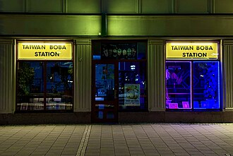

茶饮文化长文
为什么新式茶饮也在中国茶文化的连续谱里：从窨花、调饮、冷饮到城市现制茶的当代入口
创建时间： · 修改时间：
讨论新式茶饮时，最常见也最偷懒的一种说法，是把它直接扔到“中国传统茶”的对立面去：仿佛一边是山场、工艺、盖碗、清饮，另一边是奶、果、冰、糖、联名和外卖杯，两边天然互相排斥。这个判断听起来干脆，实际却把中国茶历史里一直存在的丰富性切掉了。中国人从来就不只接受一种喝茶方式。清饮当然重要，但窨花、拼配、调饮、冷暖转换、点茶、煮茶、佐点分享、茶馆社交、街头外带，本来也都属于茶进入日常生活的不同接口。
所以，这篇文章真正想回答的不是“新式茶饮是不是传统”，而是一个更有意思的问题：为什么它明明看起来那么现代、那么商业、那么社交媒体化，却仍然应该被放回中国茶文化的连续谱里理解？答案并不在于替它硬找一个“古已有之”的护身符，而在于承认中国茶文化本来就不是博物馆里单一、静止、只能正襟危坐地被体验的东西。它一直会随着器具、城市节奏、流通方式、口味结构和商业环境变化而变化。
今天的现制茶饮店，无非是把中国茶原本就擅长的几种能力——以茶为底、与花香或果味结合、面向多人分享、适配季节冷暖、进入高频消费——重新装进了商场、写字楼、地铁口、外卖平台和手机下单系统里。它当然不是传统茶席的平替，也不等于严肃品饮，但它确实是今天大量年轻人最真实、最频繁、最先发生的一种“与茶建立关系”的方式。
 新式茶饮最重要的变化，不是把茶变“花哨”了，而是把茶重新放回高频城市生活里：边走边喝、通勤顺手买、与朋友分享、在商场和写字楼之间快速流通。
新式茶饮最重要的变化，不是把茶变“花哨”了，而是把茶重新放回高频城市生活里：边走边喝、通勤顺手买、与朋友分享、在商场和写字楼之间快速流通。新式茶饮中国茶文化调饮传统现制茶饮城市消费
一、把新式茶饮和传统茶完全对立起来，为什么会看漏很多东西？
因为这种对立默认了一套过于单薄的“正统茶”想象：只有原叶、清饮、慢节奏、器具体系完整、最好还带一点山水与文人气，才算真正的中国茶；其余一切只要进入了糖、奶、果、冰、连锁、广告、外卖和社交传播，就立刻被降级成了“偏离”。问题在于，中国茶实际走过的路根本没这么单线条。历史上人们既清饮，也点茶、煎茶、煮茶；既重叶底和汤感，也大量使用花香、香片、拼配与时令搭配；既有文人空间，也有茶馆、码头、街巷和旅途上的实用饮用。
换句话说，中国茶文化真正连续的，不是某一种唯一合法的杯中形态，而是“茶不断被重新安放进生活”的能力。只要还在围绕茶底、香气、入口结构、季节体感、社交场景和日常节奏组织饮用方式，它就还在这条连续谱上。差别只是，有的时代通过炭火和壶，有的时代通过瓷盖碗，有的时代通过茶馆长桌，有的时代则通过透明塑料杯、封口膜、取号屏和小程序下单。
这也是为什么我们已经在本栏目写过的现制茶饮品牌崛起、轻乳茶赛道、无糖瓶装茶回潮，虽然看起来都是“现代消费议题”，但本质上讨论的依然是茶如何在新的商业与城市环境里继续占据入口。只不过今天的入口更快、更密、更可复制，也更依赖品牌和视觉系统。
 无论是清饮还是调饮，茶首先仍然是一种具体原料。新式茶饮之所以值得讨论，不是因为它抛弃了茶，而是因为它把茶底重新组织进了更高频、更城市化的消费结构里。
无论是清饮还是调饮，茶首先仍然是一种具体原料。新式茶饮之所以值得讨论，不是因为它抛弃了茶，而是因为它把茶底重新组织进了更高频、更城市化的消费结构里。
二、中国茶历史里本来就有调饮、窨花、拼配与冷热转换，现代茶饮并不是凭空冒出来的
很多人对“传统”的理解，其实来自近现代被反复强化的一小段图像：盖碗、紫砂壶、公道杯、闻香杯、山头茶、慢慢泡。它当然成立，但只是传统的一部分。只要把视野稍微放宽一点，就会看到中国茶长期拥有极强的适配能力。窨花茶本身就是典型例子——它并不是把茶“污染”了，而是把茶和花香关系经营得极深；许多地方性的茶食、茶点搭配也说明茶从来不只是孤立饮料，而是与口腔风味、社交场景和身体感受共同工作的东西。
再比如冷热变化。现代人容易把“冰茶”看成彻底西化的东西，但从更宽的饮用逻辑看，茶进入冷饮体系并没有那么不可思议。只要一座城市足够热、足够快、足够商业，茶就会自然被推向更方便、更解渴、更能外带的版本。今天的柠檬茶、冷泡茶、冰乌龙、鲜果茶，固然有现代供应链和连锁系统的功劳，但它们之所以这么容易被接受，也因为中国人本来就不陌生于“让茶服务于当下口感和场景”的思路。
这也是为什么“新式茶饮”不该被写成传统断裂史，而更像一部再组织史。它把原本分散在历史长河里的几种能力重新打包了：茶底表达、花香表达、果味搭配、冷热切换、分享传播、即时可得。真正新的不是这些能力本身，而是它们第一次在移动支付、连锁门店、短视频平台和高密度商圈里被工业化地组合起来。
 窨花茶说明“给茶加入更强香气表达”并不是今天才有的创意。现代茶饮里的茉莉、栀子、白兰与花香营销，某种程度上只是把这套老能力翻译进更快的城市消费语境。
窨花茶说明“给茶加入更强香气表达”并不是今天才有的创意。现代茶饮里的茉莉、栀子、白兰与花香营销，某种程度上只是把这套老能力翻译进更快的城市消费语境。 冷饮化让茶获得了另一种入口：不必坐下，不必等水温，不必完整展开器具体系，也依然可以成为日常解渴、清口与提神的选择。
冷饮化让茶获得了另一种入口：不必坐下，不必等水温，不必完整展开器具体系，也依然可以成为日常解渴、清口与提神的选择。三、真正的变化，不是“茶里加了奶和水果”，而是茶第一次被高度城市商业化地重新分发
如果只把新式茶饮理解成“往茶里加东西”，就会低估它的时代性。奶、果、花、本来都不新；真正新的是分发方式。今天的现制茶饮店，本质上是一个把茶重新接入城市基础设施的系统：商场一层黄金铺位、办公楼外带窗口、外卖前置店、手机点单、标准化杯型、可被拍照识别的品牌视觉，再加上高频上新和社交媒体扩散。这一整套系统决定了茶不再只是慢慢进入某人的生活，而是以极高的可见性和极低的决策门槛反复出现。
也正因此，现代茶饮和传统茶并不是谁替代谁，而更像各自占领不同入口。传统清饮更适合深入、停留、比较、学习和沉浸；现制茶饮更适合穿行、补水、提神、社交、通勤和即时满足。很多年轻人并不是先从盖碗开始爱上茶，而是先从一杯写着茉莉、乌龙、轻乳、真茶底的外带饮品开始，逐渐建立起“茶和别的底味不一样”“不同茶种确实会影响风格”的感知。这个入口很浅，但入口本身就已经重要。
从这个意义上说，新式茶饮其实做了一件很中国、也很现代的事：它没有把茶当作必须被完整继承的古典对象，而是把茶当作仍然可以继续进入大众生活、继续被包装、继续被移动、继续被消费和再解释的活材料。这件事既会带来粗糙化风险，也会带来扩张性的生命力。
 现代茶饮最强的不是某一个单品，而是它背后的分发系统：柜台、外带、取号、展示与高密度人流，让茶重新获得了前所未有的城市可达性。
现代茶饮最强的不是某一个单品，而是它背后的分发系统：柜台、外带、取号、展示与高密度人流，让茶重新获得了前所未有的城市可达性。
四、为什么很多年轻人明明先喝奶茶果茶，却反而因此学会了一些茶的基本词汇？
因为新式茶饮虽然高度商业化，但它并没有完全把“茶”从产品结构里抹掉。相反，很多品牌为了做出差异，恰恰必须不断强调茶底：乌龙还是茉莉，焙火还是清香，红茶还是绿茶，兰香还是花香，真茶底还是只有“茶味”想象。消费者未必要系统理解这些术语，但只要他反复在菜单、海报、社交平台种草内容和朋友讨论中看到这些词，词汇就会慢慢进入感知系统。
这类教育当然非常碎片化，也不一定准确；它甚至经常先服务于营销，而不是服务于知识。但它仍然是一种入口教育。很多人第一次意识到“乌龙比茉莉更厚一点”“花香型和焙火型会影响整体口感”“轻乳茶的好喝与否不是只有奶，还跟茶底有关”，并不是在读茶书时，而是在现制茶饮店里买了很多次不同产品以后。它不严谨，却真实；不完整，却高频。
从文化传播的角度看，这件事非常关键。因为一门饮食文化想继续活下去，不能只依靠深度用户与专家，也需要足够大的外围入口。新式茶饮恰恰构成了这个外围：它让“茶”作为词和味道，在大量不打算立刻进入传统茶世界的人那里，先保留住了存在感。这一点，和无糖瓶装茶重新教育人们分辨茶感，其实是同一条线上的不同节点。
五、那它和真正的传统茶世界到底有什么本质差别？差别仍然很大，而且不必硬抹平
把新式茶饮放回连续谱里理解，不等于说它和传统茶席、茶馆、山场经验、工艺判断没有差别。差别当然很大。第一，目标不同。传统茶世界强调的是停留、比较、层次、回味、器具关系、产地与工艺理解；现制茶饮优先服务的是效率、统一感、风味稳定性、外带便利和品牌识别。第二，节奏不同。传统茶常常要求时间，现制茶则主动压缩时间。第三，解释方式不同。传统茶通过经验训练建立判断，现代茶饮则更多通过产品命名、菜单结构、广告语言与视觉符号快速建立认知。
这些差别不该被遮掉，因为它们正是两者各自成立的前提。问题不在于承认差别，而在于别把差别自动翻译成高低。现制茶饮不是传统茶的终点，也不是传统茶的敌人；它是另一个接口，另一个层级，另一个速度。有人会从这里继续往深处走，开始学着分辨单丛、铁观音、龙井、茉莉银毫；也有人只是把它当作一种城市里可反复购买的轻松饮料。两者都成立。
更重要的是，只有承认差别，我们才能更准确地看待它的优点与问题。它的优点在于扩大入口、放大茶的可见性、提高茶在城市生活中的在场率；它的问题在于容易被糖、奶、香精想象、过度营销和同质化包装掩盖，甚至把“茶”压成仅剩一个背景标签。这也是为什么今天“真茶底”“配料表透明”“少添加”会变得越来越重要——因为市场也在重新追问：你到底是真把茶带回来，还是只借茶当装饰？
 现代茶饮和传统茶最大的差别之一，是它必须在极短时间内把产品说清楚。所以“茶感是否可见、是否能被一眼理解”会成为很重要的竞争点。
现代茶饮和传统茶最大的差别之一，是它必须在极短时间内把产品说清楚。所以“茶感是否可见、是否能被一眼理解”会成为很重要的竞争点。
六、如果把目光放到国际读者身上，为什么更应该解释“连续”，而不是只强调“新奇”？
因为对很多海外读者来说，最容易产生的误解有两个：一个是把中国茶想成只存在于古典器物和仪式里的东西；另一个是把现代中国茶饮想成完全脱离茶文化的商业快消品。如果只讲前者，会把中国茶说得像凝固文物；如果只讲后者，又会让现代中国饮茶生活显得像凭空出现的潮流工业。真正更接近现实的写法，是说明中国茶文化既有深度传统，也有强烈的适应能力，而今天的新式茶饮正是这份适应能力在现代城市经济里的新版本。
这对面向外部世界理解中国茶尤其重要。因为“连续”不是说现代奶茶等于古代茶饮，而是说中国人和茶之间那条关系线没有断，只是接口换了。今天的接口可能是一杯轻乳茉莉、一杯焙火乌龙拿铁感茶饮、一杯无糖瓶装乌龙，甚至是一杯被朋友拍进短视频里的冰茶。形式很新，但仍然在训练味觉、建立词汇、组织社交和安排生活节奏。
如果我们只愿意承认那些最古典、最慢、最安静的部分才算“真的茶文化”，那我们反而会错过中国茶当下最具生命力的一面：它仍然在商业里、仍然在年轻人口中、仍然在高频消费里、仍然在不断自我翻译。这未必都优雅，但确实很活。
 现代茶饮常常先以“看得懂、拿得走、愿意分享”的方式被接受，然后才有人继续往更细的茶底与风味里走。这种顺序和传统入门不同，但同样有效。
现代茶饮常常先以“看得懂、拿得走、愿意分享”的方式被接受，然后才有人继续往更细的茶底与风味里走。这种顺序和传统入门不同，但同样有效。
茶进入现代城市，并不总发生在安静茶室里。很多时候，它发生在商场、街头、夜间窗口和外带柜台，这些地方同样构成今天真实的饮茶地理。七、所以，新式茶饮到底该怎么放进中国茶文化里理解？
最准确的放法，大概不是把它抬成“传统本体”，也不是把它贬成“完全无关”。更好的理解方式是：它是中国茶文化在现代城市消费社会中的一个高频分支，一种低门槛接口，一套高可见性的再分发系统。它把茶从山场、茶桌、茶馆和文化叙事中再一次拎出来，放回手机订单、透明外带杯、写字楼电梯、商场中庭和社交媒体推荐流里。
这意味着它既有文化意义，也有商业局限。文化意义在于，它让茶没有退出当代生活；商业局限在于，它会被效率、标准化和传播逻辑持续压缩。正因为如此，它更值得被认真写，而不是用一句“这不算茶”轻轻打发。很多时代里，文化的延续都不是通过最纯粹的形态完成的，而是通过那些看起来最不纯、却最有扩散力的接口完成的。今天的新式茶饮，大概就是中国茶的这样一个接口。
如果你想继续顺着这条线往下读，可以接着看《现制茶饮为什么会爆火》、《轻乳茶为什么从一杯爆款变成一条赛道》、《为什么“配料表透明、真茶底、少添加”成了茶饮新热点》和《无糖瓶装茶为什么又成了硬通货》。它们共同指向的是同一件事：茶并没有退出中国人的日常，只是它在今天，被组织成了不同速度、不同价格带、不同媒介和不同入口的多个版本。
来源参考：